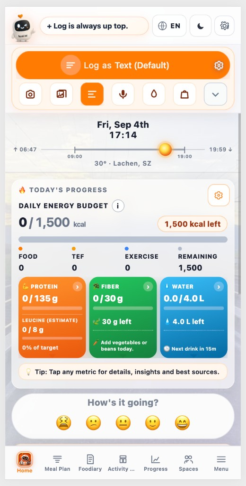

This is your daily desk. Log up top. Progress in the middle. Tabs at the bottom. Numbers below match the screenshot regions from top to bottom.

Brand mark. You are in kCal Buddy — not a generic diary app.
Reminder during early use: food logging lives in this top strip, not buried in Foodiary.
Switch UI language (EN / DE / FI / …).
Moon icon — light / dark appearance.
Account and app settings.
Main button. Type what you ate (“2 eggs and toast”). Buddy parses and estimates nutrition, then saves into Foodiary.
Preferences for how logging behaves (default mode, etc.).
Photograph a meal. Buddy reads the plate and proposes food + nutrition.
Pick an existing photo from your phone instead of taking a new one.
Active when the text icon is orange — same as the big Log as Text button.
Say the meal out loud. Buddy listens, shows a transcript, then confirms.
Quick water log — updates the Water card without a full food entry.
Shopping / receipt-related shortcuts when available.
Extra log options that do not fit on the first row.
Which day you are looking at. Change day when logging yesterday or reviewing the past.
Sunrise → sunset with where you are in the day (context, not a calorie control).
Local temperature and location context for the day.
Customize what this progress block shows.
Eaten vs target (e.g. 0 / 1,500 kcal) and how much is left. Fills when Foodiary rows for this day have calories.
Calories from food logged today.
Thermic effect of food — digestion cost estimated from what you ate.
Activity burn credited for the day (when connected / logged).
What is left in the budget after food, TEF, and exercise.
Protein vs target, plus leucine estimate. Tap for sources and detail.
Fiber vs target and a short tip (e.g. vegetables / beans).
Liters vs target and “next drink” nudge. Updated by the water drop (#12).
“Tap any metric for details…” — cards open deeper insights, not just numbers.
Optional mood check-in (five faces). Separate from food logging.
Full tab list with jobs: Bottom tabs guide.
This screen — log + progress (active when orange).
Planned meals for the days ahead.
Day book — edit rows Buddy saved, or add a careful manual entry.
Movement / burn calendar and activity views.
Trends over time (weight, streaks, longer charts).
Together features — groups and shared spaces.
More: About, legal, install app, Help link, extras.